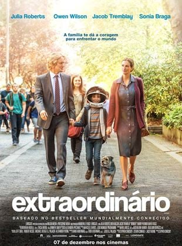
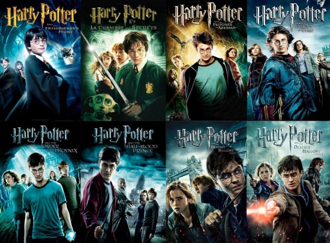

Charlie é um jovem que tem dificuldades para interagir em sua nova escola. Com os nervos à flor da pele, ele se sente deslocado no ambiente. Seu professor de literatura, no entanto, acredita nele e o vê como um gênio. Mas Charlie continua a pensar pouco de si... até o dia em que dois amigos, Patrick e Sam, passam a andar com ele.
Extraordinário

Auggie Pullman é um garoto que nasceu com uma deformação facial, o que fez com que passasse por 27 cirurgias plásticas. Aos 10 anos, ele pela primeira vez frequentará uma escola regular, como qualquer outra criança. Lá, precisa lidar com a sensação constante de ser sempre observado e avaliado por todos à sua volta.
Vingadores: Ultimato
Em Vingadores: Ultimato, após Thanos eliminar metade das criaturas vivas em Vingadores: Guerra Infinita, os heróis precisam lidar com a dor da perda de amigos e seus entes queridos. Com Tony Stark vagando perdido no espaço sem água nem comida, o Capitão América/Steve Rogers e a Viúva Negra/Natasha Romanov precisam liderar a resistência contra o titã louco.
Doutor Estranho no Multiverso da Loucura
Em Doutor Estranho no Multiverso da Loucura, após derrotar Dormammu e enfrentar Thanos nos eventos de Vingadores: Ultimato, o Mago Supremo, Stephen Strange, e seu parceiro Wong, continuam suas pesquisas sobre a Joia do Tempo. Mas um velho amigo que virou inimigo coloca um ponto final nos seus planos e faz com que Strange desencadeie um mal indescritível, o obrigando a enfrentar uma nova e poderosa ameaça. O longa se conecta com a série do Disney+ WandaVision e tem relação também com Loki. O longa pertence a fase 4 do MCU onde a realidade do universo pode entrar em colapso por causa do mesmo feitiço que trouxe os vilões do Teioso para o mundo dos Vingadores e o Mago Supremo precisará contar com a ajuda de Wanda, que vive isolada desde os eventos de WandaVision.
Harry Potter

Harry Potter é um garoto órfão de 10 anos que vive infeliz com seus tios, os Dursley. Até que, repentinamente, ele recebe uma carta contendo um convite para ingressar em Hogwarts, uma famosa escola especializada em formar jovens bruxos. Inicialmente Harry é impedido de ler a carta por seu tio Válter, mas logo ele recebe a visita de Hagrid, o guarda-caça de Hogwarts, que chega em sua casa para levá-lo até a escola. A partir de então Harry passa a conhecer um mundo mágico que jamais imaginara, vivendo as mais diversas aventuras com seus mais novos amigos, Rony Weasley e Hermione Granger .
Monstros S.A
Monstros S.A. é a maior fábrica de sustos existente. Localizada em uma dimensão paralela, a fábrica constrói portais que levam os monstros para os quartos das crianças, onde eles poderão lhes dar sustos e gerar a fonte de energia necessária para a sobrevivência da fábrica. Entre todos os monstros que lá trabalham o mais assustador de todos é James P. Sullivan, um grande e intimidador monstro de pêlo azul e chifres, que é chamado de Sully por seus amigos. Seu assistente é Mike Wazowski , um pequeno ser de um olho só com quem tem por missão assustar as crianças, que são consideradas tóxicas pelos monstros e cujo contato com eles seria catastrófico para seu mundo. Porém, ao visitar o mundo dos humanos a trabalho, Mike e Sully conhecem a garota Boo, que acaba sem querer indo parar no mundo dos monstros.